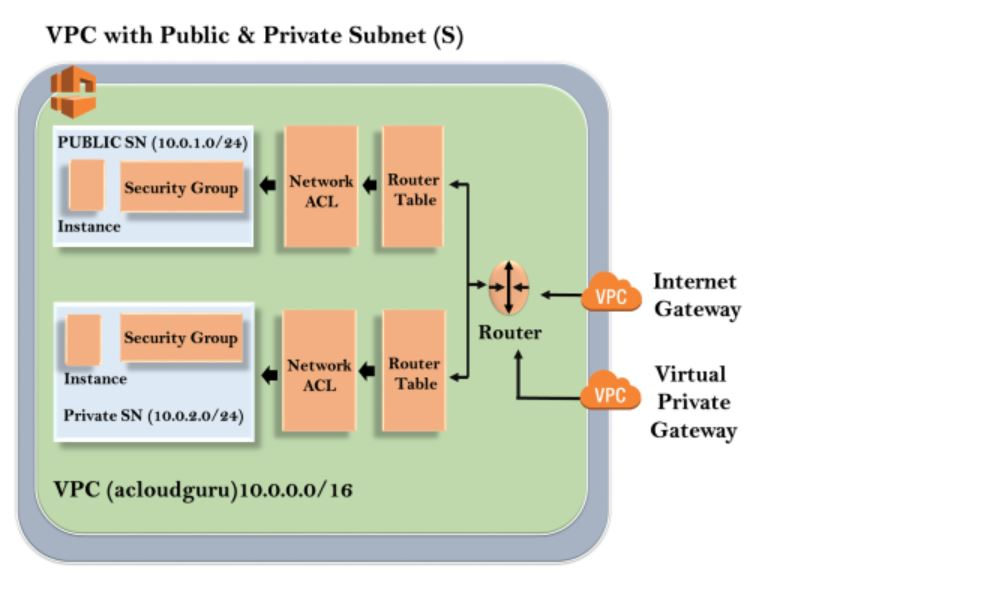

-> VPC stands for Virtual Private Cloud. -> Amazon Virtual Private Cloud (Amazon VPC) let's you provision a logically isolated section of the Amazon Web Service (AWS) cloud where you can launch AWS resources in a virtual network that you define. -> A Virtual Private Cloud is a virtual network that closely resembles a traditional networking that you operate in your own data center, with the benefits of using the scalable infrastructure of AWS. Or, VPC is a virtual Network or data center inside AWS for one client. -> You have complete control over your virtual networking environment, including a selection of your IP address range, the creation of subnets, and configuration of route tables and network gateways. -> You can easily customize the network configuration for your Amazon Virtual Private Cloud. For example, you can create a public-facing subnet for web servers that can access to the internet and can also place your backend system such as databases or application servers to a private-facing subnet. -> You can provide multiple layers of security, including security groups and network access control lists, to help control access to Amazon EC2 instances in each subnet. -> It is logically isolated from other virtual N/W in the AWS cloud. -> Max. 5 VPC can be created in one region and 200 subnets in 1 VPC. -> We can allocate max. 5 Elastic IP in one account. -> Once we create VPC, DHCP, NACL and Security Group will be automatically created. -> A VPC is confined to an AWS Region and does not extend between Regions. -> VPC is made in within region but not on AZ. But subnet made in always AZ.Architecture of VPC
 1. The outer line represents the region, and the region is for example us-east-1. 2. Inside the region, we have VPC, and outside the VPC, we have internet gateway and virtual private gateway. 3. Internet Gateway and Virtual Private Gateway are the ways of connecting to the VPC. 4. Both these connections go to the router in a VPC and then router directs the traffic to the route table. 5. Route table will then direct the traffic to Network ACL. 6. Network ACL is the firewall or much like security groups. 7. Network ACL are statelist which allows as well as deny the roles. 8. You can also block the IP address on your Network ACL. Now, move over to the security group that accesses another line against the EC2 instance. 9. It has two subnets, i.e., Public and Private subnet. 10. In public subnet, the internet is accessible by an EC2 instance, but in private subnet, an EC2 instance cannot access the internet on their own. 11. We can connect the instances. To connect an instance, move over to the public subnet and then it SSH to the private subnet. This is known as jump boxes. 12. In this way, we can connect an instance in public subnet to an instance in private subnet.Some Extra points to Remember -
1. Once the VPC is created, you cannot change its CIDR Block Range. 2. If you need a different CIDR size, create a new VPC. 3. The different subnets within VPC cannot overlap. 4. You can however expand your vpc CIDR by adding secondary subnet (Except GovCloud & AWS China). 5. NAT Gateways always created in public subnet but used in private subnet.Types of VPC -
There are two types of VPC. 1. Default VPC 2. Custom VPC 1. Default VPC - -> Created by default in each region when an AWS account created. -> Has default CIDR, Security Group, NACL and Route table settings. -> HAS an Internet Gateway by default. 2. Custom VPC - -> Is a VPC an AWS account owner creates. -> AWS user creating the custom VPC can decide the CIDR. -> Has it's own default Security Group, Network ACL and Route Tables. -> Does not have Internet Gateway by default, one needs to be created if needed. Note: You have to create VPC, subnet, Internet gateway and Route Table in sequence to create any type of VPC.Components of VPC
-> CIDR and IP address Subnets -> Implied Router and Routing table -> Internet Gateway -> Security Groups -> Network ACL -> Virtual Private Gateway -> Peering Connections -> Elastic IP